전기기사 (2007-03-04 기출문제)
1과목: 전기자기학
1. 자유공간에서 변위 전류는 무엇에 의해서 발생하는가?
- 전압에 의해서
- 자계에 의해서
- 전속밀도에 의해서
- 자속밀도에 의해서
(정답률: 69%)

2. 맥스웰의 전자방정식 중 패러데이 법칙에서 유도된 식은? (단, D : 전속밀도, ρv : 공간 전하밀도, B : 자속밀도, E : 전계의 전위, J : 전류밀도, H : 자계의 세기)
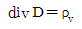
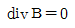
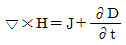
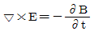
(정답률: 79%)
3. 진공 중의 도체계에서 유도계수와 용량계수의 성질 중 옳지 않은 것은?
- 용량계수는 항상 0보다 크다.
- q11≧0-(q21＋q31＋q41＋···＋qn1)
- qrs=qsr이다.
- 유도계수와 용량계수는 항상 0보다 크다.
(정답률: 73%)
4. 전기력선의 성질에 대한 설명으로 옳지 않은 것은?
- 전계가 0이 아닌 곳에서는 2개의 전기력선은 교차하는 일이 없다.
- 전기력선은 도체내부에 존재한다.
- 전하가 없는 곳에서는 전기력선의 발생, 소멸이 없다.
- 전기력선은 그 자신만으로 폐곡선을 만들지 않는다.
(정답률: 72%)
5. 전위 V가 단지 x만의 함수이며 x=0에서 V=0이고, x=d일 때 V=V0이니 경계조건을 갖는다고 한다. 라플라스 방정식에 의한 V의 해는?
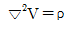
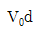
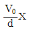
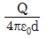
(정답률: 50%)
6. 진공 중에 있는 반지름 a[m]인 도체구의 정전용량 [F]은?
- 4πε0a
- V0d
- ε0a
- a
(정답률: 84%)
7. 다음 중 자기회로의 자기저항에 대한 설명으로 옳은 것은?
- 자기회로의 단면적에 비례한다.
- 투자율에 반비례한다.
- 자기회로의 길이에 반비례한다.
- 단면적에 반비례하고 길이의 제곱에 비례한다.
(정답률: 67%)
8. N회 감긴 환상코일의 단면적이 S[m2]이고 평균 길이가 I[m]이다. 이 코일의 권수를 반으로 줄이고 인덕턴스를 일정하게 하려고 할 때, 다음 중 옳은 것은?
- 단면적을 2배로 한다.
- 길이를 1/4로 한다.
- 전류의 세기를 4배로 한다.
- 비투자율을 2배로 한다.
(정답률: 76%)
9. 그림과 같이 직류전원에서 부하에 공급하는 전류는 50[A]이고 전원전압은 480[V]이다. 도선이 10[㎝] 간격으로 평행하게 배선되어 있다면 1[m] 당 두 도선 사이에 작용하는 힘은 몇 [N]이며, 어떻게 작용하는가?
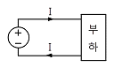
- 5×10-3, 흡인력
- 5×10-3, 반발력
- 5×10-2, 흡인력
- 5×10-2, 반발력
(정답률: 58%)
10. 최대 전계 Em=6[V/m]인 평면전자파가 수중을 전파할 때 자계의 최대치는 약 몇 [AT/m]인가? (단, 물의 비유전율 εs=80, 비투자율 μs=1이다.)
- 0.071
- 0.142
- 0.284
- 0.426
(정답률: 67%)
11. 유전체의 분극도 표현으로 옳지 않은 것은? (단, P : 분극의 세기, D : 전속밀도, E : 전계의 세기, ε : 유전율, ε0 : 진공의 유전율, εr : 비유전율이다.)
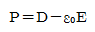
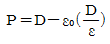
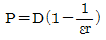
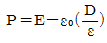
(정답률: 60%)
12. 그림과 같은 수평한 연철봉 위에 절연된 동선을 감아 이것에 저항, 전류, 스위치를 접속하여 연철봉의 한 끝에는 알루미늄 링을 축과 일치시켜 움직일 수 있도록 가느다란 실로 매달아 정지시켰을 때 다음 설명 중 옳은 것은?
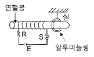
- 전류를 계속하여 흘리고 있을 때 알루미늄 링은 왼쪽으로 움직인다.
- 스위치 S를 닫아 전류를 흘리고 있다가 스위치 S를 개방하는 순간 알루미늄 링은 좌우로 진동한다.
- 스위치 S를 닫는 순간 알루미늄 링은 오른쪽으로 움직인다.
- 전류를 흘리고 있다가 스위치 S를 개방하는 순간 알루미늄 링은 오른쪽으로 움직인다.
(정답률: 53%)
13. 점전하 Q1, Q2 사이에 작용하는 쿨롱의 힘이 F일 때, 이 부근에 점전하 Q3를 놓을 경우 Q1과 Q2 사이의 쿨롱의 힘은 F'이다. F'와 F의 관계로 옳은 것은?
- F＞F'이다.
- F＜F'이다.
- F=F'이다.
- Q3의 크기에 따라 다르다.
(정답률: 68%)
14. 벡터 A=i-j＋3k, B=i＋ak일 때 벡터 A와 벡터 B가 수직이 되기 위한 a의 값은? (단, i, j, k는 x, y, z 방향의 기본벡터이다.)
- -2
- -(1/3)
- 0
- 1/2
(정답률: 65%)
15. 다음 유전체 중 비유전율이 가장 작은 것은?
- 고무
- 유리
- 운모
- 물
(정답률: 62%)
16. 전계 E[V/m] 및 자계 H[AT/m]인 전자파가 자유공간 중을 빛의 속도로 전파될 때 단위시간에 단위면적을 지나는 에너지는 몇 [W/m2]인가? (단, C는 빛의 속도를 나타낸다.)
- EH
- EH2
- E2H
- 1/2(CE2H2)
(정답률: 78%)
17. 유전체 A, B의 접합하여 전하가 없을 때, 각 유전체 중 전계의 방향이 그림과 같고 EA=100[V/m]이면, EB는 몇 [V/m]인가?
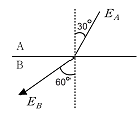
- 100/3
- 100/√3
- 300
- 100√3
(정답률: 62%)
18. 1[μA]의 전류가 흐르고 있을 때, 1초 동안 통과하는 전자수는 약 몇 개인가? (단, 전자 1개의 전하는 1.602×10-19[C]이다.)
- 6.24×1010
- 6.24×1011
- 6.24×1012
- 6.24×1013
(정답률: 71%)
19. 그림과 같이 평등자장 및 두 평행 도선이 놓여 있을 때 두 평행 도선상을 한 도선봉이 V[m/s]의 일정한 속도로 이동한다면 부하 R [Ω]에서 줄열로 소비되는 전력 [W]은 어떻게 표시되는가? (단, 도선봉과 두 평행 도선은 완전도체로 저항이 없는 것으로 한다.)
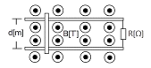
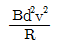
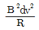
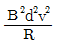
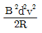
(정답률: 54%)
20. 유전체 역률 (tanδ)과 무관한 것은?
- 주파수
- 정전용량
- 인가전압
- 누설저항
(정답률: 43%)
2과목: 전력공학
21. 전선의 표피효과에 관한 설명으로 옳은 것은?
- 전선이 굵을수록, 주파수가 낮을수록 커진다.
- 전선이 굵을수록, 주파수가 높을수록 커진다.
- 전선이 가늘수록, 주파수가 낮을수록 커진다.
- 전선이 가늘수록, 주파수가 높을수록 커진다.
(정답률: 70%)
22. 유량의 크기를 구분할 때 갈수량이란?
- 하천의 수위 중에서 1년을 통하여 355일간 이보다 내려가지 않는 수위 때의 물의 량
- 하천의 수위 중에서 1년을 통하여 275일간 이보다 내려가지 않는 수위 때의 물의 량
- 하천의 수위 중에서 1년을 통하여 185일간 이보다 내려가지 않는 수위 때의 물의 량
- 하천의 수위 중에서 1년을 통하여 95일간 이보다 내려가지 않는 수위 때의 물의 량
(정답률: 70%)
23. 화력발전소에서 재열기의 목적은?
- 급수 예열
- 석탄 건조
- 공기 예열
- 증기 가열
(정답률: 75%)
24. 송전계통의 안정도 향상 대책이 아닌 것은?
- 계통의 직렬 리액턴스를 증가시킨다.
- 전압 변동을 적게 한다.
- 고장시간, 고장전류를 적게 한다.
- 계통분리방식을 적용한다.
(정답률: 75%)
25. 그림과 같은 회로의 영상, 정상, 역상임피던스 Z0, Z1, Z2는?
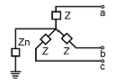
- Z0=3z＋Zn, Z1=3Z, Z2=Z
- Z0=3Zn, Z1=Z, Z2=3Z
- Z0=Z＋Zn, Z1=Z2=Z＋3Zn
- Z0=Z＋3Zn, Z1=Z2=Z
(정답률: 61%)
26. 반지름 0.6[㎝]인 경동선을 사용하는 3상 1회선 송전선에서 선간거리를 2[m]로 정삼각형 배치할 경우, 각 선의 인덕턴스는 약 몇 [mH/km]인가?
- 0.81
- 1.21
- 1.51
- 1.81
(정답률: 57%)
27. 다음 ( ① ), ( ② ), ( ③ ) 에 알맞은 것은?
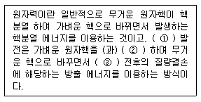
- ① 원자핵융합, ② 융합, ③ 결합
- ① 핵결합, ② 반응, ③ 융합
- ① 핵융합, ② 융합, ③ 핵반응
- ① 핵반응, ② 반응, ③ 결합
(정답률: 74%)
28. 원자로의 감속재가 구비하여야 할 사항으로 적합하지 않은 것은?
- 중성자의 흡수 단면적이 적을 것
- 원자량이 큰 원소일 것
- 중성자와의 충돌 확률이 높을 것
- 감속비가 클 것
(정답률: 58%)
29. 송전선로에 매설지선을 설치하는 주된 목적은?
- 직격뢰로부터 송전선을 차폐보호하기 위하여
- 철탑 기초의 강도를 보강하기 위하여
- 현수애자 1연의 전압분당을 균일화하기 위하여
- 철탑으로부터 송전선로로의 역섬락을 방지하기 위하여
(정답률: 75%)
30. 다음 중 배전 선로의 손실을 경감하기 위한 대책으로 적절하지 않는 것은?
- 전력용 콘덴서 설치
- 배전 전압의 승압
- 전류 밀도의 감소와 평형
- 누전 차단기 설치
(정답률: 65%)
31. 경간 200[m], 전선의 자체무게 2[kg/m], 인장하중 5000[kg], 안전율 2인 경우, 전선의 이도(dip)는 몇 [m]인가?
- 2
- 4
- 6
- 8
(정답률: 68%)
32. 150kVA 단상변압기 3대를 △-△결선으로 사용하다가 1대의 고장으로 V-V 결선하여 사용하면 약 몇 kVA 부하까지 걸 수 있겠는가?
- 200
- 220
- 240
- 260
(정답률: 69%)
33. 전원이 양단에 있는 환상선로의 단락보호에 사용되는 계전기는?
- 방향거리계전기
- 부족전압계전기
- 선택접지계전기
- 부족전류계전기
(정답률: 67%)
34. 소호리액터접지의 합조도가 정(＋)인 경우에는 어느 것과 관련이 있는가?
- 공진
- 과보상
- 접지저항
- 아크전압
(정답률: 60%)
35. 60[Hz], 154[kV], 길이 100[km]인 3상 송전선로에서 대지정전용량 Cs=0.0⑤[μF/Km], 전선 간의 상호정전용량 Cm=0.0014[μF/km]일 때 1선에 흐르는 충전전류는 약 몇 A인가?
- 17.8
- 30.8
- 34.4
- 53.4
(정답률: 51%)
36. 이상 전압에 대한 설명 중 옳지 않은 것은?
- 송전선로의 개폐 조작에 따른 과도현상 때문에 발생하는 이상 전압을 개폐 서지라 부른다.
- 충격파를 서지라 부르기도 하며 극히 짧은 시간에 파고값에 도달하고 극히 짧은 시간에 소멸한다.
- 일반적으로 선로에 차단기를 투입할 때가 개방할 때 보다 더 높은 이상 전압을 발생한다.
- 충격파는 보통 파고값과 파두 길이와 파미 길이로 나타낸다.
(정답률: 63%)
37. 평균유효낙차 48[m]의 저수지식 발전소에서 1000[m3]의 저수량은 약 몇[kWh]의 전력량에 해당하는가? (단, 수차 및 발전기의 종합효율은 85%라고 한다.)
- 111
- 122
- 133
- 144
(정답률: 42%)
38. 송전거리, 전력, 손실률 및 역률이 일정하다면 전선의 굵기는?
- 전류에 비례한다.
- 전압의 제곱에 비례한다.
- 전류에 반비례 한다.
- 전압의 제곱에 반비례한다.
(정답률: 61%)
39. 변전소에서 비접지 선로의 접지보호용으로 사용되는 계전기에서 영상전류를 공급하는 것은?
- CT
- GPT
- ZCT
- PT
(정답률: 74%)
40. 수력발전소에서 조속기의 작동을 민감하게 하면, 수압상승률 α와 속도상승률 β는 어떻게 변화하는가?
- α는 감소하고, β는 증가한다.
- α는 증가하고, β는 감소한다.
- α, β 모두 증가한다.
- α, β 모두 감소한다.
(정답률: 53%)
3과목: 전기기기
41. 50[Hz], 슬립 0.2인 경우의 회전자 속도가 600[rpm]일 때 유도전동기의 극수는 몇 극인가?
- 6
- 8
- 12
- 16
(정답률: 63%)
42. 브러시레스 DC 서보 모터의 특징으로 틀린 것은?
- 단위 전류당 발생 토크가 크고 역기전력에 의해 불필요한 에너지를 귀환하므로 효율이 좋다.
- 토크 맥동이 작고, 안정된 제어가 용이하다.
- 기계적 시간상수가 크고 응답이 느리다.
- 기계적 접점이 없고 신뢰성이 높다.
(정답률: 68%)
43. 4극, 60[Hz]의 유도전동기가 슬립 5%로 전부하 운전하고 있을 때, 2차 권선의 손실이 94.25[W]라고 하면 토크는 약 몇 [N·m]인가?
- 1.02
- 2.04
- 10
- 20
(정답률: 53%)
44. 3상 전원을 이용하여 2상전압을 얻고자 할 때 사용하는 결선 방법은?
- Scott 결선
- Fork 결선
- 환상 결선
- 2중 3각 결선
(정답률: 66%)
45. 임피던스 전압강하가 5[%]인 변압기가 운전 중 단락되었을 때 단락전류는 정격전류의 몇 배가 되는가?
- 2
- 5
- 10
- 20
(정답률: 67%)
46. 4극 중권 직류전동기의 전기자 도체수가 160, 1극당 자극수 0.01[Wb], 전기자 전류가 100[A]라면 발생토크는 약 몇[N·m]인가?
- 12.8
- 25.5
- 38.4
- 43.2
(정답률: 57%)
47. 변압기의 전압 변동률에 대한 설명 중 잘못된 것은?
- 일반적으로 부하변동에 대하여 2차 단자전압의 변동이 작을수록 좋다.
- 전부하시와 무부하시의 2차 단자전압이 서로 다른 정도를 표시하는 것이다.
- 전압 변동률은 전등의 광도, 수명, 전동기의 출력 등에 영향을 미치는 중요한 성질이다.
- 인가전압이 일정한 상태에서 무부하 2차 단자 전압에 반비례 한다.
(정답률: 60%)
48. 전압 변동률이 작은 동기발전기의 특성으로 옳은 것은?
- 동기 리액턴스가 크다.
- 전기자 반작용이 크다.
- 속도 변동률이 크다.
- 단락비가 크다.
(정답률: 64%)
49. 다음 중 서보모터가 갖추어야 할 조건이 아닌 것은?
- 기동토크가 클 것
- 토크 - 속도곡선이 수하특성을 가질 것
- 회전자를 굵고 짧게 할 것
- 전압이 0이 되었을 때 신속하게 정지할 것
(정답률: 59%)
50. 3상 직권정류자 전동기의 특성으로 틀린 것은?
- 직권성의 변속도 전동기이다.
- 토크는 거의 전류의 제곱에 비례하고 기동토크가 크다.
- 역률은 동기속도 이상에서 나빠지며 80%정도이다.
- 효율은 고속에서는 거의 일정하며 동기속도 근처에서 가장 좋다.
(정답률: 58%)
51. 100[HP], 600[V], 1200[rpm]의 직류 분권전동기가 있다. 분권 계자저항이 400[Ω], 전기자저항이 0.22[Ω]이고 정격부하에서의 효율이 90%일 때 전부하 시의 역기전력은 약 몇 [V]인가?
- 550
- 570
- 590
- 610
(정답률: 45%)
52. 부하가 변하면 속도가 현저하게 변하는 직류 전동기는?
- 직권 전동기
- 분권 전동기
- 차동 복권 전동기
- 가동 복권 전동기
(정답률: 63%)
53. 전압을 일정하게 유지하기 위해서 이용되는 다이오드는?
- 정류용 다이오드
- 바랙터 다이오드
- 바리스터 다이오드
- 제너 다이오드
(정답률: 61%)
54. 6극 60[Hz] 3상 동기발전기가 있다. 회전자의 주변속도를 400[m/s] 이하로 하려면 회전자의 최대 지름은 약 몇 m로 하여야 하는가?
- 4.35
- 5.24
- 6.37
- 7.86
(정답률: 47%)
55. 변압기유로 사용되는 절연유로 요구되는 특성이 아닌 것은?
- 절연내력이 클 것
- 인화점이 높을 것
- 점도가 클 것
- 응고점이 낮을 것
(정답률: 67%)
56. 다음 중 3단자 사이리스터가 아닌 것은?
- SCS
- SCR
- GTO
- TRIAC
(정답률: 65%)
57. 변압기에서 컨서베이터를 설치하는 가장 중요한 목적은?
- 통풍 장치
- 열화 방지
- 코로나 방지
- 강제 순환
(정답률: 68%)
58. 다음 단상 유도전동기 중 기동 토크가 가장 큰 것은?
- 콘덴서 기동형
- 반발 기동형
- 분상 기동형
- 셰이딩 코일형
(정답률: 70%)
59. 3상 동기발전기의 여자전류 10[A]에 대한 단자전압이 1000√3V, 3상 단락전류는 50A이다. 이때의 동기임피던스는 몇 Ω인가?
- 5
- 11
- 20
- 34
(정답률: 49%)
60. 동기발전기의 병렬운전에서 한쪽의 계자전류를 증대시켜 유기기전력을 크게 하면 어떻게 되는가?
- 무효 순환전류가 흐른다.
- 두 발전기의 역률이 모두 낮아진다.
- 주파수가 변화되어 위상각이 달라진다.
- 속도 조정률이 변한다.
(정답률: 61%)
4과목: 회로이론 및 제어공학
61. 20[mH]의 두 자기인덕턴스가 있다. 결합계수를 0.1부터 0.9까지 변화시킬 수 있다면 이것을 접속시켜 얻을 수 있는 합성 인덕턴스의 최대값과 최소값의 비는 얼마인가?
- 9 : 1
- 13 : 1
- 16 : 1
- 19 : 1
(정답률: 51%)
62. R-L 직렬회로에서 스위치 S를 닫아 직류전압 E[V]를 회로 양단에 급히 가하면 L/R초 후의 전류값은 약 얼마인가?
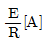
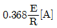
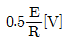
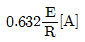
(정답률: 60%)
63. 대칭 좌표법에서 대칭분을 각 상전압으로 표시한 것 중 틀린 것은?
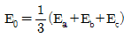
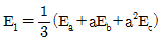
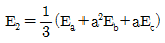
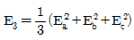
(정답률: 69%)
64. 전압의 순시값이 e=3＋10√2·sinωt＋5√2·sin(3ωt-30°)[V]일 때 실효값은 약 몇 [V]인가?
- 11.6
- 13.2
- 16.4
- 20.1
(정답률: 65%)
65. 회로에서 7[Ω]의 저항 양단의 전압은 몇 [V]인가?
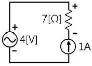
- 7
- -7
- 4
- -4
(정답률: 59%)
66. 그림과 같은 T형 회로의 임피던스 파라미터 Z11의 값은?
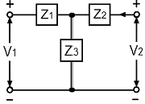
- Z3
- Z1＋Z2
- Z2＋Z3
- Z1＋Z3
(정답률: 65%)
67. R=2[Ω], L=10[mH], C=4[μF]의 직렬 공진회로의 선택도 Q값은 얼마인가?
- 25
- 45
- 65
- 85
(정답률: 58%)
68. 그림의 회로에서 합성 인덕턴스는?
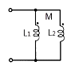
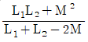
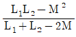
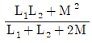
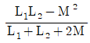
(정답률: 51%)
69. R, C 저역 필터회로의 전달함수 G(jω)는 얼마인가? (단, ω=0 이다.)
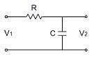
- ０
- 0.5
- 0.707
- １
(정답률: 42%)
70. 전송선로의 특성임피던스가 50[Ω]이고 부하저항이 150[Ω]이면 부하에서의 반사계수는 얼마인가?
- 0
- 0.5
- 0.7
- 1
(정답률: 62%)
71. 함수 f(t)=e-2ᵗcos3t의 라플라스 변환은?
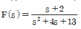
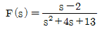
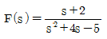
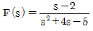
(정답률: 56%)
72. 다음 안정도 판별법 중 G(s)H(s)의 극점과 영점이 우반평면에 있을 경우 판정 불가능한 방법은?
- Routh - Hurwitz 판별법
- Bode 선도
- Nyduist 판별법
- 근궤적법
(정답률: 54%)
73. 상태방정식 X(t)=AX(t)으로 표시되는 제어계가 있다. 이 방정식의 값은 어떻게 되는가? (단, X(0)는 초기상태 벡터이다)
- e-AtX(0)
- eAtX(0)
- A·e-AtX(0)
- A·eAtX(0)
(정답률: 28%)
74. 상태 방정식 X=AX＋BU에서 일 때 고유 값은?
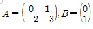
- -1, -2
- 1, 2
- -2, -3
- 2, 3
(정답률: 59%)
75. 그림과 같은 블록선도에서 등가 전달함수는?
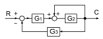
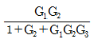
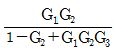
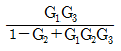
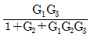
(정답률: 65%)
76. 그림과 같은 논리회로는?
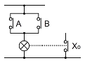
- OR 회로
- AND 회로
- NOT 회로
- NOR 회로
(정답률: 59%)
77. 특성방정식이 S3＋S2＋s=0일 때, 이 계통은 어떻게 되는가?
- 안정하다.
- 불안정하다.
- 조건부 안정이다.
- 임계상태이다.
(정답률: 37%)
78. 그림과 같은 제어계에서 단위 계단 입력 D가 인가 될 때 외란 D에 의한 정상편차는 얼마인가?
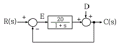
- 20
- 21
- 1/10
- 1/21
(정답률: 56%)
79. 그림과 같은 회로망은 어떤 보상기로 사용될 수 있는가?
- 지연 보상기
- 지·진상 보상기
- 지상 보상기
- 진상 보상기
(정답률: 60%)
80. 자동제어의 추치 제어에 속하지 않는 것은?
- 프로세스 제어
- 추종제어
- 비율제어
- 프로그램제어
(정답률: 39%)
5과목: 전기설비기술기준 및 판단기준
81. 변전소에 고압용 기계기구를 시가지내에 사람이 쉽게 접촉할 우려가 없도록 시설하는 경우 지표상 몇 [m]이상의 높이에 시설하여야 하는가? (단, 고압용 기계기구에 부속하는 전선으로는 케이블을 사용한다.)
- 4
- 4.5
- 5
- 5.5
(정답률: 36%)
82. 지중전선로의 시설에 관한 사항으로 옳은 것은?
- 전선은 케이블을 사용하고 관로식, 암거식 또는 직접매설식에 의하여 시설한다.
- 전선은 절연전선을 사용하고, 관로식, 암거식 또는 직접매설식에 의하여 시설한다.
- 전선은 케이블을 사용하고 내화성능이 있는 비닐 관에 인입하여 시설한다.
- 전선은 절연전선을 사용하고 내화성능이 있는 비닐 관에 인입하여 시설한다.
(정답률: 64%)
83. 피뢰기를 반드시 시설하여야 할 곳은?
- 전기 수용장소 내의 차단기 2차측
- 가공전선로와 지중전선로가 접속되는 곳
- 수전용변압기의 2차측
- 경간이 긴 가공전선로
(정답률: 59%)
84. 지중전선로를 직접매설식에 의하여 시설하는 경우에 차량 등 중량물의 압력을 받을 우려가 있는 장소에는 매설 깊이를 몇 m 이상으로 하여야 하는가?(관련 규정 개정전 문제로 여기서는 기존 정답인 4번을 누르면 정답 처리됩니다. 자세한 내용은 해설을 참고하세요.)
- 0.6
- 0.8
- 1.0
- 1.2
(정답률: 63%)
85. 사용전압이 400[V] 미만인 저압 가공전선은 케이블이나 절연전선인 경우를 제외하고 인장강도가 3.42[kN]이상인 것 또는 지름이 몇 [mm]이상의 경동선이어야 하는가?
- 1.2
- 2.6
- 3.2
- 4.0
(정답률: 27%)
86. 다음 ( ) 안의 내용으로 옳은 것은?
- 정전유도작용 또는 표피작용
- 전자유도작용 또는 표피작용
- 정전유도작용 또는 전자유도작용
- 전자유도작용 또는 페란티작용
(정답률: 60%)
87. 다음 중 무선용 안테나 등을 지지하는 철탑의 기초안전율로 옳은 것은?
- 0.92이상
- 1.0이상
- 1.2 이상
- 1.5이상
(정답률: 58%)
88. 전로의 중성점을 접지하는 목적이 아닌 것은?
- 고전압 침입 예방
- 이상 시 전위상승 억제
- 보호계전방치 등의 확실한 동작의 확보
- 부하 전류의 경강으로 전선을 절약
(정답률: 62%)
89. 저압 가공전선 상호간을 접근 또는 교차하여 시설하는 경우 전선 상호간 이격거리 및 하나의 저압가공전선과 다른 저압 가공전선로의 지지물사이의 이격거리는 각각 몇 ㎝ 이상이어야 하는가? (단, 어느 한 쪽의 전선이 고압 절연전선, 특별고압절연전선 또는 케이블이 아닌 경우이다.)
- 전선 상호간 : 30, 전선과 지지물간 : 30
- 전선 상호간 : 30, 전선과 지지물간 : 60
- 전선 상호간 : 60, 전선과 지지물간 : 30
- 전선 상호간 : 60, 전선과 지지물간 : 60
(정답률: 44%)
90. 수소 냉각식 발전기 등의 시설기준으로 옳지 않은 것은?
- 발전기 혹은 조상설비 등의 이상을 조기에 검지하여 경보하는 기능이 있을 것
- 수소의 누설 또는 공기의 혼입 우려가 없는 것일 것
- 발전기축의 밀봉부로부터 수소가 누설 될 때 누설된 수고를 외부로 방출하지 않을 것
- 수소가 대기압에서 폭발하는 경우에 생기는 압력에 견디는 강도를 가지는 것일 것
(정답률: 55%)
91. 고주파 이용 설비에서 다른 고주파 이용 설비에 누설되는 고주파 전류의 허용 한도는 몇 [dB]인가? (단, 1[mW]를 0[dB]로 한다.)
- 20
- -20
- -30
- 30
(정답률: 44%)
92. 교류 단선식 전기철도에서 전차선로를 전용 부지 안에 시설하고 전차선을 가공방식으로 할 때 사용전압은 몇 [V]이하이어야 하는가?
- 15000
- 20000
- 22000
- 25000
(정답률: 35%)
93. 고압용 차단기 등의 동작 시에 아크가 발생하는 기구는 목재의 벽 또는 천장 등 가연성 구조물 등으로부터 몇 m 이상 이격하여 시설하여야 하는가?
- 1
- 1.5
- 2
- 2.5
(정답률: 35%)
94. 다음 중 접지공사에 대한 설명으로 옳지 않은 것은?(관련 규정 개정전 문제로 여기서는 기존 정답인 3번을 누르면 정답 처리됩니다. 자세한 내용은 해설을 참고하세요.)
- 특별고압 계기용 대한 변성기의 2차측 전로에 제1종 접지공사
- 고저압 혼촉에 의한 위험 바지시설로 저압측의 중성점에 제2종 접지공사
- 특별고압에서 고압으로 변성하는 변압기의 고압측 1단자에 시설하는 정전방전기에 특별 제3종 접지공사
- 380[V] 전동기의 외함에 제3종 접지공사
(정답률: 47%)
95. 최대 사용전압이 22900[v]인 3상4선식 중성선 다중접지식 전로와 대지사이의 절연내력 시험전압은 몇 [V]인가?
- 21068
- 25229
- 28752
- 32510
(정답률: 64%)
96. 전력계통의 운용에 관한 지시를 하는 곳은?
- 발전소
- 변전소
- 개폐소
- 급전소
(정답률: 61%)
97. 교류에서 고압의 범위는?(관련 규정 개정전 문제로 여기서는 기존 정답인 1번을 누르면 정답 처리됩니다. 자세한 내용은 해설을 참고하세요.)
- 600[V]를 초과하고 7000[V] 이하인 것
- 750[V]를 초과하고 7000[V] 이하인 것
- 600[V]를 초과하고 7500[V] 이하인 것
- 750[V]를 초과하고 7500[V] 이하인 것
(정답률: 62%)
98. 가공 전선로의 지지물에 시설하는 지선에 관한 사항으로 옳은 것은?
- 지선의 안전율은 1.2 이상일 것
- 지선에 연선을 사용할 경우에는 소선은 3가닥 이상의 연선일 것
- 소선은 지름 1.2[mm] 이상인 금속선을 사용한 것일 것
- 도로를 횡단하여 시설하는 지선의 높이는 교통에 지장을 초래할 우려가 없는 경우에는 지표상 2.0[m]이상일 것
(정답률: 63%)
99. 전로의 사용전압 400[V] 미만이고, 대지전압이 220[V]인 옥내전로에서 분기회로의 절연저항값은 몇 [MΩ]이상이어야 하는가?(관련 규정 개정전 문제로 여기서는 기존 정답인 2번을 누르면 정답 처리됩니다. 자세한 내용은 해설을 참고하세요.)
- 0.1
- 0.2
- 0.4
- 0.5
(정답률: 66%)
100. 가반형의 용접전극을 사용하는 아크용접지장치의 시설에 대한 설명으로 옳은 것은?
- 용접변압기의 1차측 전로의 대지전압은 600[V]이하일 것
- 용접변압기의 1차측 전로에는 리액터를 시설할 것
- 용접변압기는 절연변압기일 것
- 피용접재 또는 이와 전기적으로 접속되는 받침대·정반 등의 금속체에는 제2종 접지공사를 할 것
(정답률: 56%)